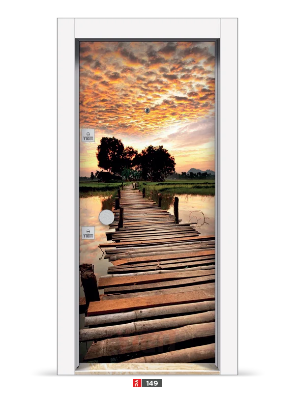

Lüks Ultralam Seri
KOD: YC 149
ULTRALAM
Ürün Kodu:
YC 149
RenkDİJİTAL BASKI
TasarımSTANDART KASA
FonksiyonStandart / Kişiselleştirilebilir
MalzemeMDF
• Bu model, farklı renk ve kasa seçenekleriyle kişiselleştirilebilir. • Aynı tasarım, farklı kombinasyonlarla size özel hale gelir.
×